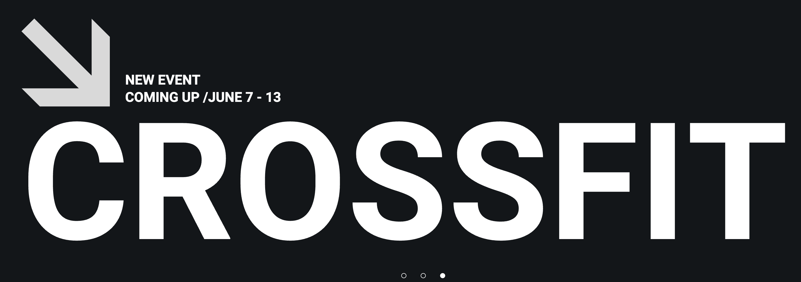
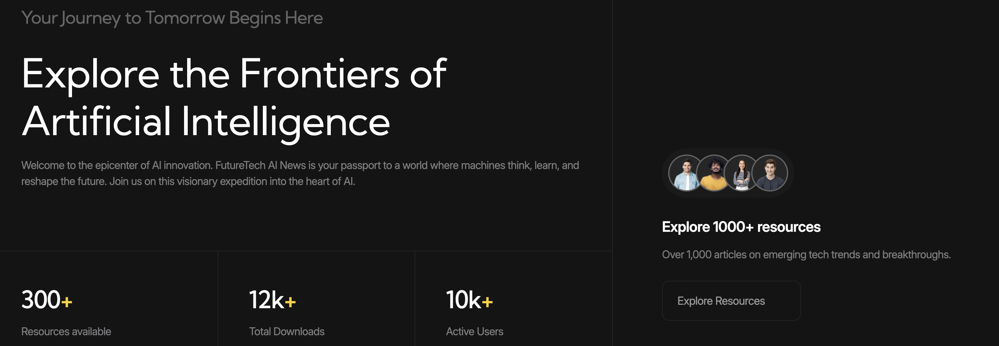
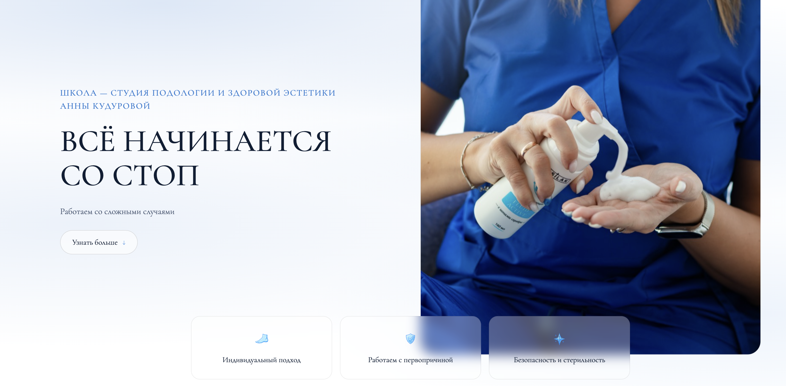
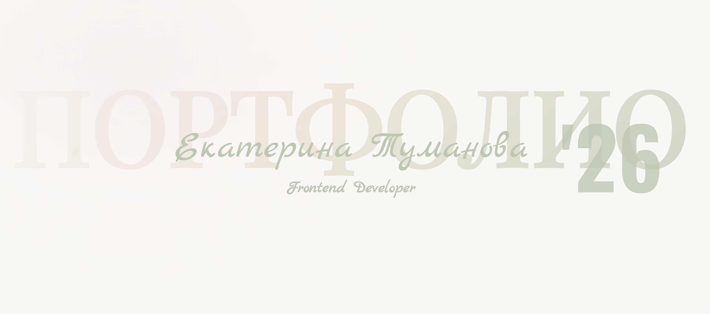

01 | Kropp Fitness
Учебный проект
Адаптивный лендинг фитнес-клуба, созданный в рамках обучения по видеоуроку. Проект позволил закрепить навыки семантической и адаптивной вёрстки с использованием HTML и CSS.

Учебный проект
Адаптивный лендинг фитнес-клуба, созданный в рамках обучения по видеоуроку. Проект позволил закрепить навыки семантической и адаптивной вёрстки с использованием HTML и CSS.

Учебный проект
Лендинг о технологиях будущего, выполненный в рамках обучения по видеоуроку. В процессе разработки реализованы адаптивная вёрстка и интерактивные элементы с использованием HTML, SCSS и JavaScript.

Полноценный коммерческий проект, разработанный с нуля по брифу заказчика
Сайт для подолога, созданный с учётом специфики сферы и потребностей целевой аудитории. Я самостоятельно выполнила весь цикл разработки: спроектировала структуру сайта, реализовала адаптивную вёрстку, подключила необходимый функционал и подготовила проект к публикации.
Особое внимание уделила удобству пользователей, скорости загрузки, семантической HTML-разметке и корректному отображению сайта на всех устройствах.
Помимо разработки, я выполнила базовую SEO-оптимизацию: настроила метатеги, структуру заголовков, оптимизировала изображения, подготовила сайт для корректной индексации поисковыми системами и улучшила технические показатели, влияющие на поисковое продвижение.
Также подключила и настроила Яндекс Метрику, чтобы заказчик мог отслеживать посещаемость сайта, поведение пользователей, источники трафика и эффективность продвижения.
В результате заказчик получил современный, быстрый и удобный сайт, полностью соответствующий требованиям брифа, готовый к продвижению и дальнейшей аналитике.

Персональный проект
Личный сайт-портфолио с авторским дизайном и собственной концепцией.
Проект создан с нуля: от разработки визуального стиля и цветовой палитры до адаптивной вёрстки и реализации интерактивных элементов на HTML, SCSS и JavaScript.
